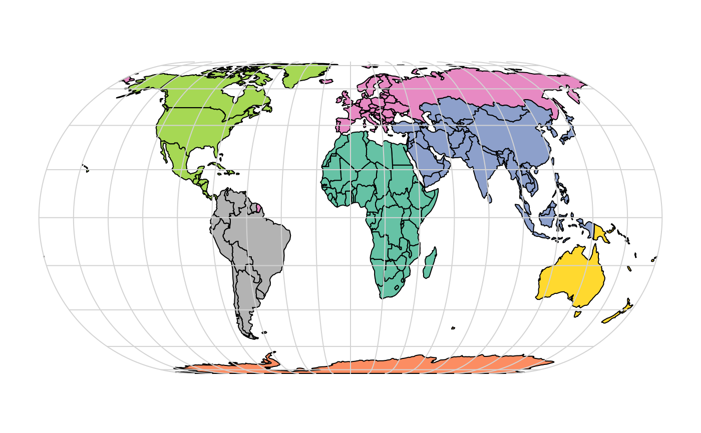
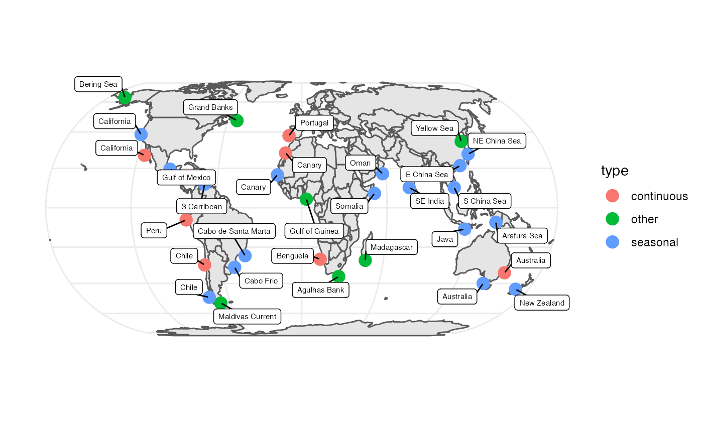
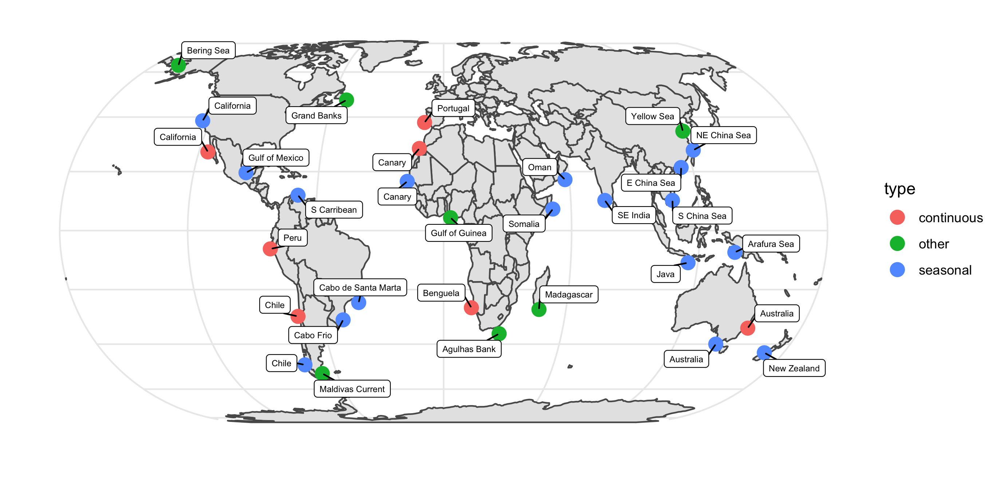

This creates the map of the worlds upwelling zones.
Load the needed packages for plotting and data.
world_proj = st_transform(world, "+proj=eck4")
par(mar = c(0, 0, 0, 0))
plot(world_proj["continent"], reset = FALSE, main = "", key.pos = NULL)
g = st_graticule()
g = st_transform(g, crs = "+proj=eck4")
plot(g$geometry, add = TRUE, col = "lightgrey")
# I clicked along the map to locate the points
# forgot one so had to add that (xx)
par(mar = c(0, 0, 0, 0))
plot(st_geometry(world_proj), graticule = TRUE, reset = FALSE)
x <- locator()
x$x <- c(x$x, xx$x)
x$y <- c(x$y, xx$y)
# This added on the names
upzones <- data.frame(x=x$x, y=x$y)
upzones$name <- c("Bering Sea", "California",
"California", "Peru", "Chile",
"Chile", "Maldivas Current",
"Cabo Frio", "Cabo de Santa Marta",
"S Carribean", "Gulf of Mexico",
"Grand Banks", "Portugal",
"Canary", "Canary",
"Gulf of Guinea", "Benguela", "Agulhas Bank",
"Madagascar", "Somalia",
"Oman", "SE India",
"Java", "Australia",
"New Zealand", "Arafura Sea",
"S China Sea", "E China Sea",
"NE China Sea", "Yellow Sea",
"Australia")
upzones$type <- c("other", "seasonal",
"continuous", "continuous", "continuous",
"seasonal", "other",
"seasonal", "seasonal",
"seasonal", "seasonal",
"other", "continuous",
"continuous", "seasonal",
"other", "continuous",
"other",
"other", "seasonal",
"seasonal", "seasonal",
"seasonal", "seasonal",
"seasonal", "seasonal",
"seasonal", "seasonal",
"seasonal", "other",
"continuous")Read in the upwelling zones locations.
a= [1686 chars quoted with '"']
fil <- tempfile(fileext = ".data")
cat(a, file=fil)
upzones <- read.csv(fil)
library(ggplot2)
library(ggrepel)
g <- ggplot() +
geom_sf(data = world_proj) + theme_minimal() +
geom_sf(data = points, aes(color=type), size = 4, shape = 19) +
geom_label_repel(data = points, aes(x=x, y=y, label = name), size = 2, min.segment.length=0) +
xlab("") + ylab("")
g
Save the plot
# Opening the graphical device
pdf(file="upwelling_zones.pdf")
g
# Closing the graphical device
dev.off()
svg(file="upwelling_zones.svg")
g
dev.off()
postscript("upwelling_zones.ps")
g
dev.off()
png("upwelling_zones.png", width = 465*0.5, height = 225*0.5, units='mm', res = 300)
g
dev.off()
knitr::include_graphics(file.path(here::here(), "inst", "images", "upwelling_zones.png"))